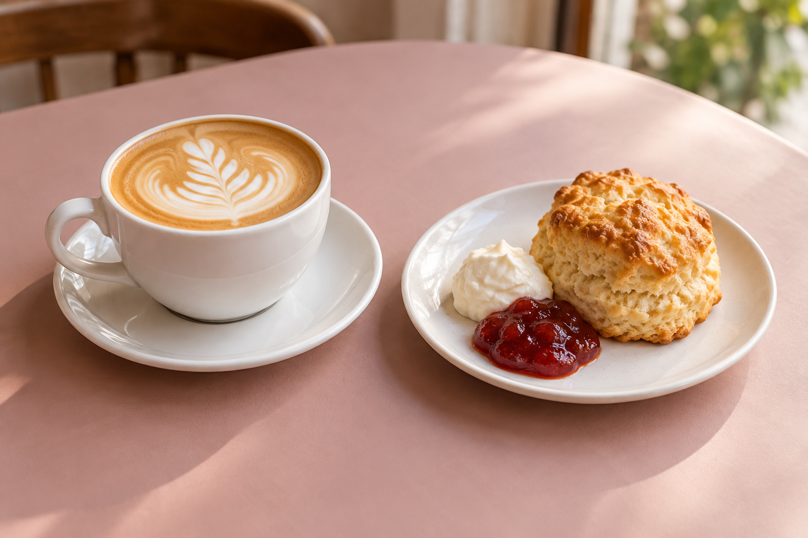
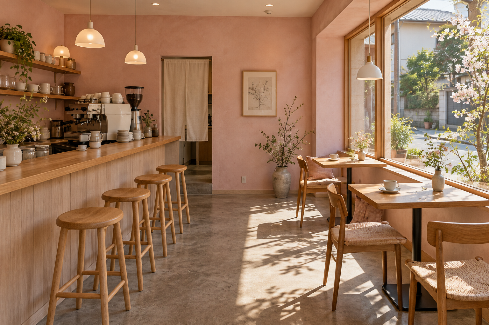
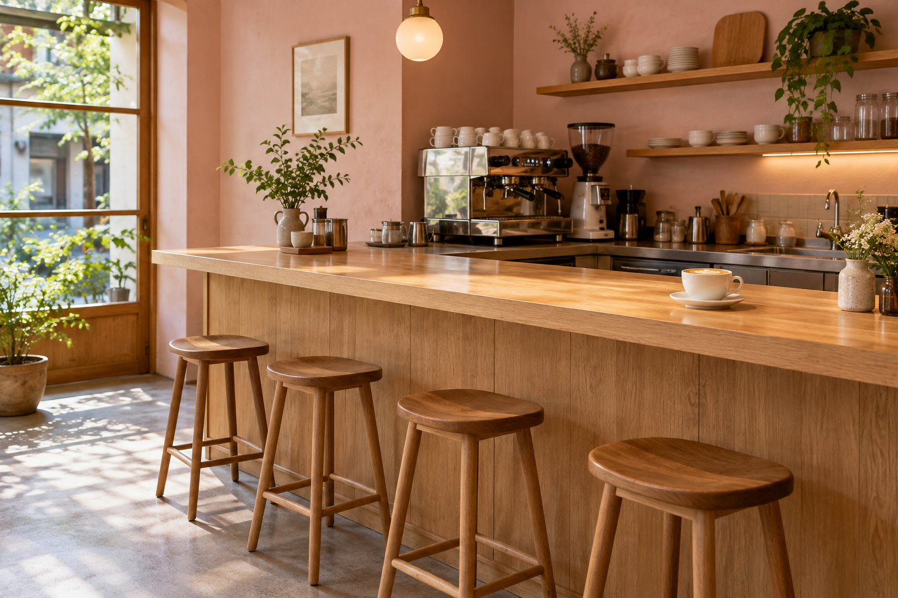
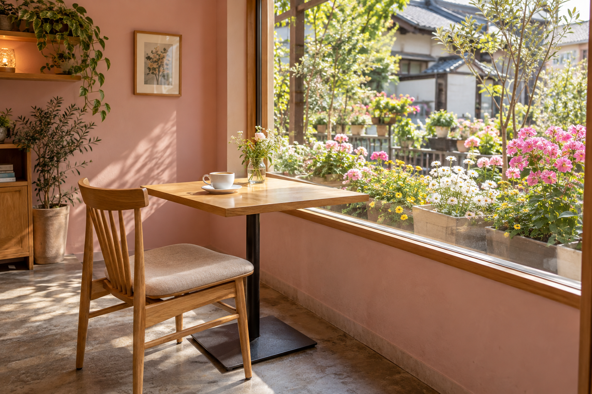

01 / SLOW TIME
ひとりでゆっくり
コーヒーを飲みながら、少しだけ日常から離れて。何もしない時間も、大切な寄り道です。
A LITTLE BREAK, JUST FOR YOU
コーヒーも、軽く一杯のお酒も。


ふらっと寄る前に、今日のお知らせを。
YOUR OWN PACE
話す日も、話さない日も。あなたのペースで。
01 / SLOW TIME
コーヒーを飲みながら、少しだけ日常から離れて。何もしない時間も、大切な寄り道です。

02 / A LITTLE CHAT
今日の出来事や、好きなものの話。気が向いたら、カウンターでひと言。
03 / ONE MORE CHAPTER
本を読みやすく支えてくれるクッションをご用意。お気に入りの一冊と、ゆったり続きを。

04 / FLOWERS BY THE WINDOW
窓際には、お花を眺められる席も。コーヒーを片手に、季節の彩りを楽しむひとときを。
BEFORE YOUR VISIT
おひとりでも、お気軽に。